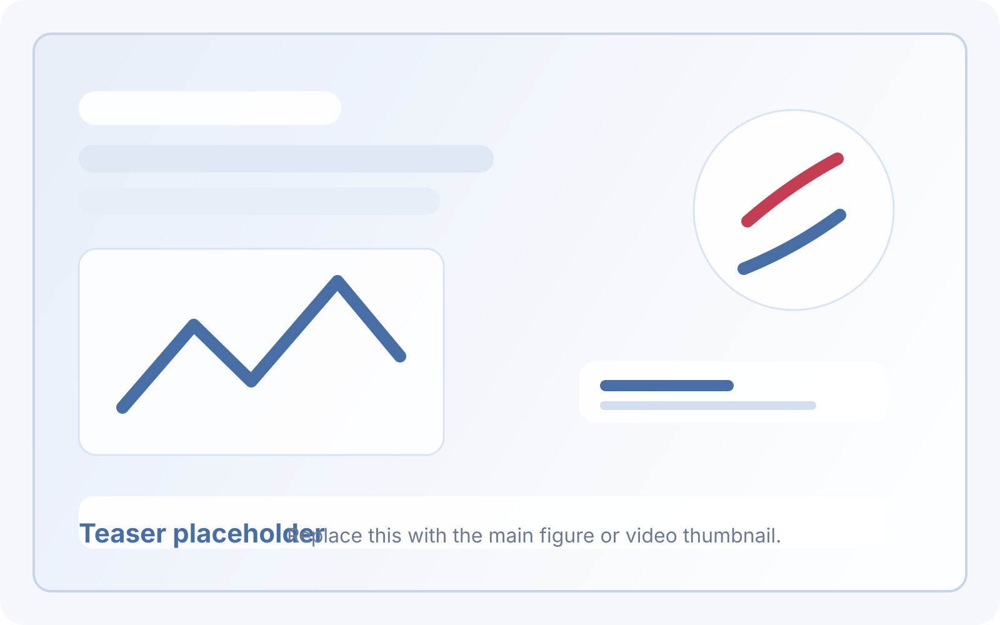
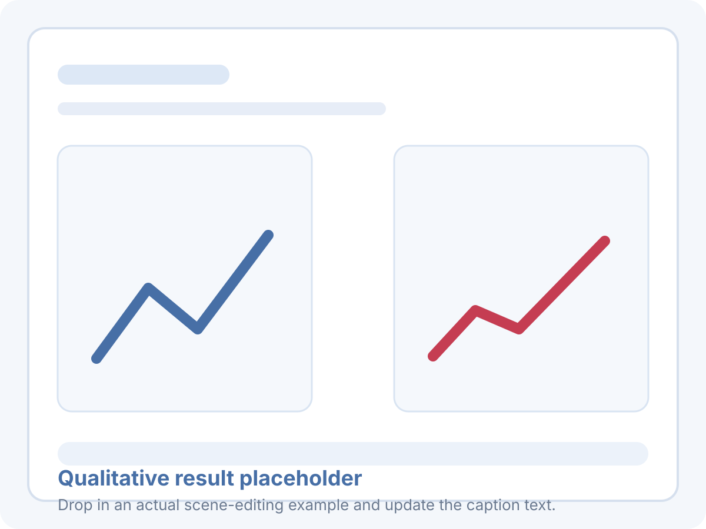

Problem framing
This section is reserved for the paper’s core formulation, including how scene editing goals are defined and how the system reasons over open-vocabulary editing targets.
Project Page
A dedicated project page for the CVPR 2026 paper. This first public version exposes the paper structure and release surface while media, links, and extended experimental materials are being prepared.

A representative teaser image or video thumbnail will be placed here once the public assets are ready.
Overview
The abstract has not been added to this repository yet. It will be published here once the paper text is publicly shareable.
Method
This section is reserved for the paper’s core formulation, including how scene editing goals are defined and how the system reasons over open-vocabulary editing targets.
A concise method summary, supported by a system diagram or key figure, will be added here once the public assets are finalized.
Results

Reserved for before-and-after scene editing examples and a short caption.
Reserved for examples that highlight language-driven editing flexibility.
Reserved for figures illustrating the goal-regressive planning process.
Reference
BibTeX will be added once the public paper identifier and official release links are available.
@inproceedings{edit_as_act_2026,
title = {Edit-As-Act: Goal-Regressive Planning for Open-Vocabulary 3D Indoor Scene Editing},
author = {Noh, SeongRae and Seo, SeungWon and Park, Gyeong-Moon and Kang, HyeongYeop},
booktitle = {Proceedings of the IEEE/CVF Conference on Computer Vision and Pattern Recognition},
year = {2026},
note = {BibTeX details and identifiers will be updated upon public release}
}